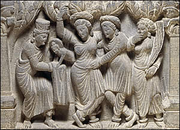
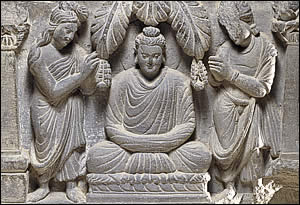

The BuddhaIn about the sixth century B.C. Siddhartha Gautama was born into a royal family. When he was a young adult his experiences with the outside world drove him to seek out a greater understanding of life and spiritual fulfilment. 
The birth of Siddhartha Gautama Through seeking guidance and meditation, Siddhartha achieved Enlightenment. From that point, he was known as the Buddha, which means 'Enlightened One'. For the rest of his life, the Buddha travelled great distances teaching people about one path to salvation. 
The temptation of Siddhartha Gautama After the Buddha's death, his pupils continued to spread his teachings. Buddhism developed at a time when Hinduism, the most widespread religion in India, had become tightly controlled by priests and the upper classes. Buddhism offered hope and access to spiritual understanding and satisfaction to ordinary people. Throughout the world today, people still follow the teachings of the Buddha.
| ||||||||